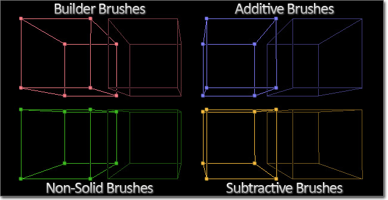
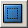
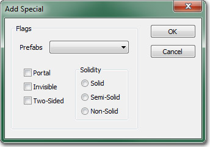
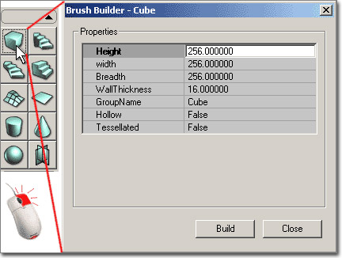
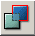
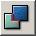
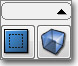
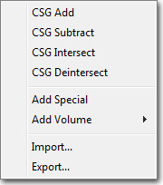
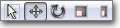
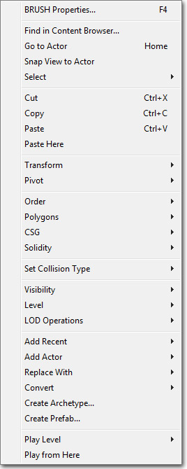

UDN
Search public documentation:
UsingBspBrushesKR
English Translation
日本語訳
中国翻译
Interested in the Unreal Engine?
Visit the Unreal Technology site.
Looking for jobs and company info?
Check out the Epic games site.
Questions about support via UDN?
Contact the UDN Staff
日本語訳
中国翻译
Interested in the Unreal Engine?
Visit the Unreal Technology site.
Looking for jobs and company info?
Check out the Epic games site.
Questions about support via UDN?
Contact the UDN Staff
BSP 브러시 사용하기
문서 변경내역: Jeff Wilson 업데이트. 홍성진 번역.
개요
BSP 브러시의 용도
레벨 윤곽 그리기(block out)
레벨을 디자인할 때의 표준적인 작업방식은 이렇게 흘러갑니다:- 레벨 윤곽 그리고 길내기
- 흐름과 게임플레이 테스트
- 레이아웃 수정과 테스트 반복
- 초기 메시 패스
- 초기 라이팅 패스
- 콜리전과 퍼포먼스 이슈 플레이테스트
- 폴리시 패스
볼륨
볼륨(Volume)이란 일정한 공간을 정의하는 투명 지오메트리로, 보통 플레이어가 볼륨으로 지정된 영역 안에 있을 때 특수한 기능을 켜는 역할을 합니다. 볼륨의 영역은 BSP 브러시로 정의됩니다. 이를 통해 맵의 일정 부분에 맞는 효과, 이를테면 수영가능 지역, 콜리전, 트리거, 포스트 프로세스 수정까지도 디자이너가 쉽게 할 수 있습니다. 볼륨 관련 상세 정보는 Using Volumes KR 페이지를 참고하시기 바랍니다.간단한 마개 지오메트리
종종 레벨 디자이너가 레벨을 만들 때, 구멍이나 간격을 메꿀 간단한 지오메트리 조각이 필요한 상황이 있습니다. 스태틱 메시가 미리 준비되어 있지 않다 하더라도 아트 팀한테 커스텀 메시를 만들라고 귀찮게 하는 대신, 디자이너가 BSP 를 사용하여 공간을 간단히 메꿀 수도 있습니다. 퍼포먼스 측면에서 스태틱 메시가 낫긴 하지만, 지오메트리가 간단하기만 하다면야 BSP 를 사용하는 데 그리 걱정할 필요는 없을 것입니다.브러시 타입

빌더 브러시
빌더 브러시는 본질적으로 다른 브러시 타입을 만들기 위해 수정해서 사용할 수 있는 템플릿입니다. 이 브러시는 지오메트리 모드의 트랜스폼 툴, 또는 메인 에디터 툴박스? 의 프리미티브를 사용해서 수정할 수 있습니다. 빌더 브러시는 맥락 메뉴의 폴리곤 > 브러시로 옵션을 사용해서 기존 브러시 형태를 따올 수도 있습니다.더하기
더하기 브러시는 입체적인, 속이 꽉 찬 공간입니다. 레벨에 추가하려는 BSP 지오메트리에 사용할 유형입니다. 사방의 벽과 바닥, 천정 등을 생각해 보시면 더하기 브러시를 쉽게 떠올려 보실 수 있습니다. 맵에 있는 이들 각각의 박스형 더하기 브러시는 구석을 맞춰 밀폐된 공간을 이룹니다.빼기
빼기 브러시는 뻥 뚫려 조각해 낸 공간입니다. 예전에 만든 더하기 브러시에서 문이나 창문같은 것을 만들기 위해 입체 공간을 제거하는 데 사용되는 브러시 형태입니다. 빼기 공간에서만 플레이어가 자유로이 이동할 수 있습니다.BSP 작업하기
더하기 vs 빼기
더하기와 빼기 브러시의 개념은 위에서 설명했습니다. 그러한 개념을 레벨 전체에 확장시켜 볼 수 있습니다. 처음 시작하는 디폴트 월드 공간은 빈 공허와도 같은 일종의 거대한 빼기 공간이며, 여기에 지오메트리를 추가하여 월드를 이룰 수 있습니다. 좀 복잡하게 말하자면 이것을 더하기 레벨이라고 합니다. 참고로 언리얼 엔진 예전 버전의 디폴트 월드는 입체 공간이어서, 공간을 빼 내야 했습니다. 더이상 그럴 필요가 없게 된 것이죠. 더하기 또는 입체 공간에서 월드를 시작, 즉 빼기 레벨로 시작한 다음 움직이려는 영역을 잘라내는 식으로 레벨을 만들 수도 있지만, 이 방법은 주의할 점이 꽤 있으며, 본질적으로는 빈 월드를 거대한 더하기 브러시로 채워넣는 것일 뿐입니다. 일반적으로는 더하기 레벨로 시작하는 것이 좋습니다.드래그 그리드
월드의 오브젝트를 십자선에 낚애채는 데 사용되는 드래그 그리드는 BSP 작업을 할 때 매우 중요합니다. 브러시의 선분이나 모서리가 그리드에 설정되어 있지 않으면, 렌더링 부작용이나 다른 문제를 만들 수 있는 에러가 날 수 있습니다. 브러시 작업을 할 때는 드래그 그리드를 항상 켜 두는 것이 좋으며, 브러시의 버텍스가 항상 이 그리드 위에 와 있는지 확인해야 합니다.브러시 순서
브러시를 놓은 순서는 그에 따라 더하기 빼기 연산이 이루어지므로 매우 중요합니다. 빼기 브러시를 놓은 다음 더하기 브러시를 놓은 것과, 더하기 브러시를 놓은 다음 빼기 브러시를 놓는 것은, 그 두 작업 모두 같은 위치에서 했다 하더라도 결과는 전혀 다릅니다. 빈 공간에서 빼기를 한 다음 그 위에 더하기를 하면, 빼기 브러시는 무에서 무를 빼는 것이니 무시됩니다. 그러나 같은 브러시를 반대 순서로 놓으면, 빈 공간에 더해진 공간을 조각하여 빼 내는 것입니다. 가끔은 브러시 순서를 무시하고 싶거나 기존 브러시 전에 새 브러시를 계산하고 싶은 경우가 있습니다. 다행히 나중에 보게 될 Brush 프로퍼티 부분에서 브러시 순서를 수정할 수 있습니다.브러시 입체성(Solidity)

버튼으로 견고성을 지정할 수 있습니다. 이 버튼을 클릭하면 다음과 같은 대화창이 열립니다:
세 종류의 입체성은 아래와 같습니다.입체
입체 브러시는 디폴트 브러시 유형입니다. 더하기나 빼기 브러시를 만들 때 얻는 것으로, 다음과 같은 특성이 있습니다:- 게임에서 플레이어와 프로젝타일을 막습니다.
- 더하기도 빼기도 가능합니다.
- 주변 브러시의 BSP 가 쪼개지게 만듭니다.
반입체
반입체 브러시는 충돌은 하면서 주변 월드 지오메트리를 쪼개지게 만들지는 않는 브러시입니다. 기둥이나 지지대같은 것을 만드는데 사용되는데, 보통은 스태틱 메시를 통해 만드는 것이긴 합니다. 다음과 같은 특성이 있습니다:- 입체 브러시처럼 플레이어와 프로젝타일을 막습니다.
- 더하기만 가능하며, 빼기는 안됩니다.
- 주변 브러시에 BSP 가 쪼개지지 않습니다.
비입체
비입체 브러시는 충돌되지도 않고 주변 월드 지오메트리를 쪼개지게 만들지도 않습니다. 눈에 보이긴 하지만 어떤 식으로든 상호작용이 불가능합니다. 다음과 같은 특성이 있습니다:- 플레이어나 프로젝타일을 막지 않습니다.
- 더하기만 가능하며, 빼기는 안됩니다.
- 주변 브러시에 BSP 가 쪼개지지 않습니다.
브러시 연산
교차제외
교차제외 툴은 현재 입체 지오메트리, 즉 더하기 브러시 안에 있는 빌더 브러시의 모든 부분을 제거하여, 입체 공간 밖의 브러시 부분만 남깁니다. 기존 지오메트리에는 영향을 끼치지 않습니다. 더하기 브러시를 만드는 준비 과정으로 빌더 브러시에 해 주는 작업일 뿐입니다.교차
교차 툴은 현재 입체 지오메트리, 즉 더하기 브러시 안에 있지 않은 모든 부분을 제거하여, 입체 공간 안의 브러시 부분만 남깁니다. 기존 지오메트리에는 영향을 끼치지 않습니다. 빼기 브러시를 만드는 준비 과정으로 빌더 브러시에 해 주는 작업일 뿐입니다.BSP 브러시 만들기

프리미티브에 우클릭하면 뜨는 창에 수치를 입력하여 크기를 설정하는 식으로 BSP 브러시를 만들 수 있습니다. 그런 다음 CSG 버튼을 사용하여 브러시를
더하거나
뺍니다. 기존 BSP 지오메트리에 더하기 빼기 작업을 할 때는 조심하시기 바랍니다. 매우 조심스러운 방법으로는 항상 빼기 전 교차 를 한 다음 더하기 전 _교차제외_를 하는 것입니다. 그러면 겹치는 BSP 지오메트리가 생기지 않아 엔진이 헛갈려 할 일이 없습니다.

참고로 브러시 파일 메뉴에서 이 브러시 기능 다수를 접할 수도 있습니다.
BSP 브러시 수정하기
지오메트리 모드
브러시 실제 모양을 바꾸기 가장 좋은 방법은 지오메트리 모드를 사용하는 것입니다. 이 에디터 모드로 브러시의 버텍스(정점), 에지(선분), 면을 직접 조작할 수 있습니다. 아주 간단한 3D 모델링 프로그램과 매우 비슷한 방식입니다. 지오메트리 모드와 브러시 수정을 위한 사용법에 대해서는 지오메트리 모드 시작하기 페이지를 참고하시기 바랍니다.트랜스폼 위젯
다양한 에디터 트랜스폼 위젯으로 브러시를 수정할 수도 있습니다. 확인해 가며 트랜슬레이션(옮기기), 로테이션(회전), 스케일(크기) 조절이 가능하며, 메인 툴바의 위젯 버튼으로 접근할 수 있습니다:
트랜스폼 위젯과 그 사용법 관련 상세 정보는 언리얼 에디터 사용 안내서를 참고하시기 바랍니다.프리미티브
프리미티브는 큐브(육면체), 실린더(원통), 콘(원뿔) 등 미리정의된 (그래도 환경설정은 가능한) 프리미티브 모양을 사용하여 빌더 브러시 모양을 다시 빚는 데 사용됩니다. 사용가능한 프리미티브와 그 사용법에 대한 정보는 메인 에디터 툴박스 페이지를 참고하시기 바랍니다.Brush 프로퍼티
기존 브러시는 브러시를 선택하고 뷰포트에서 우클릭하여 맥락 메뉴를 통해 접근하여 편집할 수 있습니다. 우클릭 메뉴는 언제든지 접근이 가능하며, 에디터에 현재 선택된 것이 무엇인가에 따라 다른 옵션이 표시되는 맥락 의존적 메뉴입니다.
선택
다음 메뉴에서 고른 옵션에 따라 선택을 합니다:
트랜스폼
현재 선택된 브러시를 그리드나 표면에 갖다 붙이는 것은 물론 미러링 옵션도 제공됩니다. 주: 많은 BSP 브러시로 만든 맵은 그리드 크기가 클 수록 훨씬 효율적으로 돌아갑니다.피벗
트랜스폼 중심점을 임시로 설정할 수 있습니다.순서
브러시 그리기 순서를 변경합니다. 어떤 이유로 브러시 더하기 빼기 순서가 잘못된 경우 좋습니다. 빼기 브러시를 그보다 나중에 놓은 더하기 브러시 속으로 옮긴 경우를 예로 들 수 있습니다. 빼기는 무시되겠죠. 이런 경우 빼기 브러시에 우클릭 > 순서 > 마지막 으로 하여 마지막으로 그려지게 만들면 레벨에서 빼기 연산 결과를 볼 수 있는 것입니다.폴리곤
- 브러시로 - 빌더 브러시를 선택한 브러시와 같은 모양으로 만듭니다.
- 브러시에서 - 선택한 브러시를 빌더 브러시와 같은 모양으로 만듭니다.
- 병합 - 브러시 면에 있는 다수의 폴리를 가능한 한 적게 병합합니다. 이 옵션이 작동하려면 동일 텍스처가 똑같이 맞춰져 있는, 맞붙은 면이 있어야 합니다.
- 분리 - 병합을 반대로 합니다.
CSG
- 더하기 - 브러시를 더하기 브러시로 바꿉니다.
- 빼기 - 브러시를 빼기 브러시로 바꿉니다.
입체성
입체 브러시를 반입체나 비입체로 바꿀 수도 있습니다. 언리얼 테크놀러지 기반 게임에서는 스태틱 메시가 대세이므로, 반입체는 사라져 가는 추세입니다. 그래도 프로젝트 초기에는 많은 BSP 브러시 지오메트리로 만든 프로토타입 맵의 BSP 구멍을 없애는 데 요긴하게 쓸 수 있습니다.볼륨 추가
빌더 브러시를 선택했을 때 쓸 수 있는데, 볼륨 추가 버튼 말고도 이 메뉴를 통해 현재 빌더 브러시를 사용하여 새 볼륨을 만들 수 있습니다.변환
- 스태틱 메시로 변환 - 사용자가 현재 선택된 브러시(들)를 스태틱 메시로 변환할 수 있습니다. 변환하려는 브러시를 전부 선택한 다음 그 중 하나에 우클릭 (버텍스 점에 우클릭하면 그 점이 메시의 원점이 됩니다!!), 옵션을 선택하고 새로운 메시 패키지와 그룹 (옵션), 그리고 이름을 지어주면 됩니다. 그러면 콘텐츠 브라우저에서 그 패키지를 열어보고 새로 생긴 메시를 선택하여 레벨에 바로 놓을 수 있습니다.
- 블로킹 볼륨으로 변환 - 기존 브러시를 대체하여 선택된 브러시를 새로운 BlockingVolume 으로 변환합니다.
- 프록빌딩으로 변환 - 선택된 브러시를 새로운 ProcBuilding 볼륨으로 변환, 옵션을 통해 기존 BSP 브러시는 지우거나 유지할 수 있습니다.
- 볼륨으로 변환 - 기존 브러시를 대체하여 선택된 브러시를 선택된 유형의 볼륨으로 변환합니다.